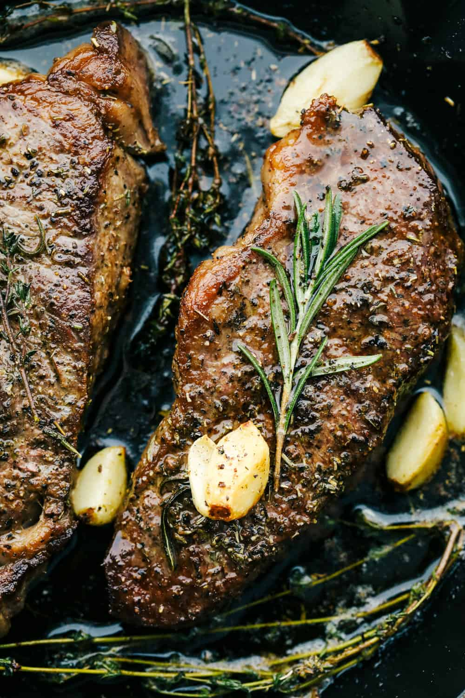

New York Steak

Description
New York Steak is the best all-around steak. Follow the steps below and you will see why!
Ingredients
- New York Steak: It is best to let your steak sit on the countertop at room temperature for 30 minutes prior to cooking.
- Salt and Pepper: Season the steaks ahead of time.
- Olive Oil: Warm the skillet with the oil before cooking.
- Butter: This helps keep the steak moist and tender as it is cooking.
- Garlic Cloves: Adding the garlic cloves brings more intense flavor.
Steps
- Prepare the Steak: Let the steaks rest for 30 minutes to come to room temperature. Salt and pepper to taste.
- Sauté: In a medium sized skillet over medium high heat at the olive oil. Once it starts to smoke add the steaks to the skillet. Sear on all of the sides until they have a golden brown crust. Add the butter and let melt in the skillet. Add in the garlic and fresh sprigs.
- Cook Until Done! Reduce the heat to medium and let them cook until they reach the desired internal temperature. Spoon the butter over the steaks while they are cooking.
Credit
https://therecipecritic.com/new-york-steak/